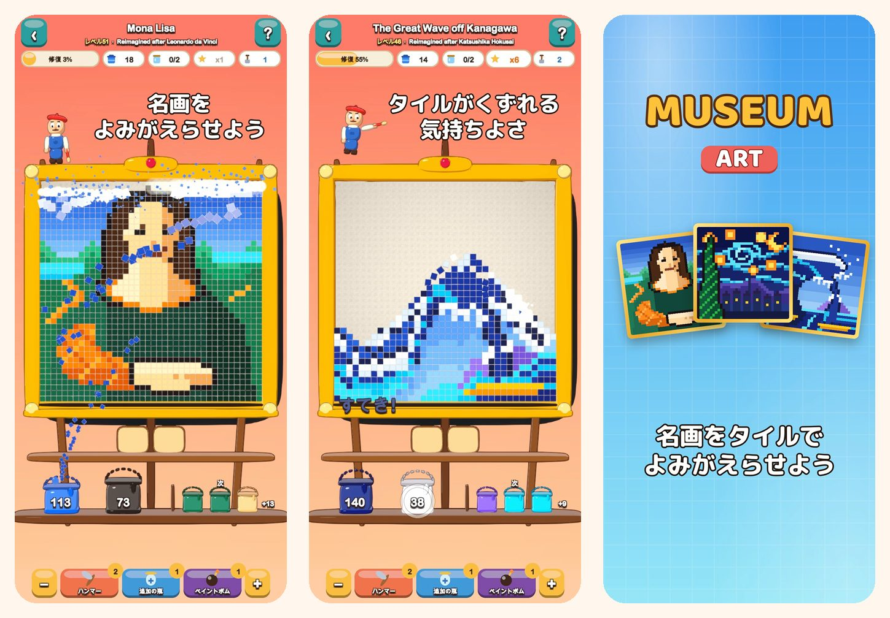

Museum Art
ピクセルアートの色パズル
色をタップすると、タイルがくずれ落ちる！モナ・リザからイスタンブール、パリ、ローマ、ニューヨークまで、51枚のピクセルアートを修復しよう。
App Storeからダウンロード
ゲームについて
Museum Artの絵は、どれもカラフルな四角いタイルでできています。色ごとにタイルを消していくと、絵がふたたび輝きます。
遊び方
- いちばん下の列にふれている色の場所か、棚のバケツをタップ。タイルが自分のバケツへ飛んでいきます。
- 上のタイルは砂のようにすべり落ち、新しい手が生まれます。
- その色のバケツがまだない？ トレイの瓶に置いておけます。
- トレイをあまり使わないほど、星がたくさんもらえます。
修復する絵は51枚
- はじめは明るくやさしい絵から：熱気球、ヨット、ネコ、灯台。
- 自然：雪の山々、山の湖、桜、夕暮れの砂漠。
- イスタンブール、パリ、ローマ、ニューヨークをめぐる世界の旅。
- 巨匠の宝物庫：「神奈川沖浪裏」「星月夜」「睡蓮」「牛乳を注ぐ女」「印象・日の出」「モナ・リザ」をピクセルアートで新たに描きました。
のんびり、フェアに
- どのレベルもブースターなしでクリアできます。やり直しは無料です。
- こまったときのブースター：ハンマー、追加の瓶、ペイントボム。
- いつでも拡大して細かいところまで見られます。
- どの絵にも楽しい豆知識つき。
- 19の言語で遊べます。